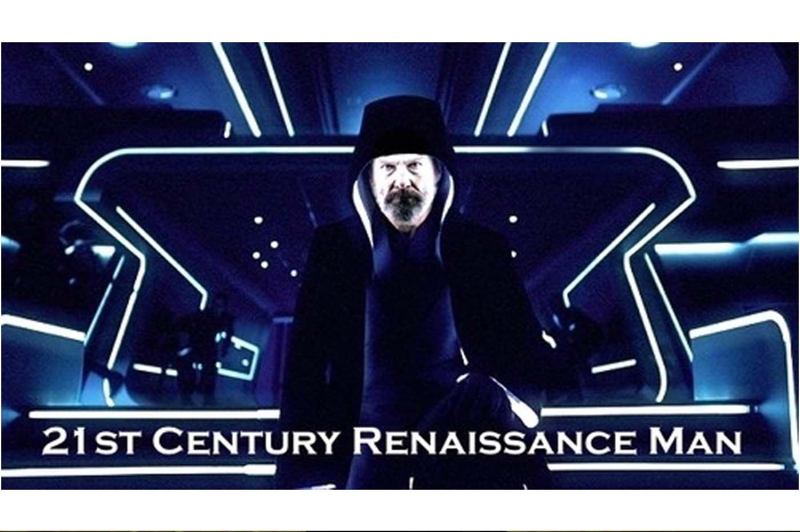

You Can’t ‘Regulate’ The Singularity
Originally published at https://singularityhacker.com/you-cant-regulate-the-singularity

The renaissance man that emerged in the 13th century was someone who could “do all things if he will”. The renaissance man of the 21st century is the developer who’s capable of executing a software project from the bottom up. This means they can wear the project manager hat and piece out the job, develop on the front-end and the back-end, market the resulting product or service, and subsequently maintain it.
At a high level this means the developer posses both technical skill and business intelligence. More specifically, it means that the 21st century Renaissance man is knowledgeable in at least the following areas:
\1. Server, Network, and Hosting Environment
\2. Data Modeling
\3. Business Logic
\4. API layer / Action Layer / MVC
\5. User Interface / User Experience
\6. Understanding what the customer needs
*Credit to Laurence Gellert for the full stack tech breakdown.